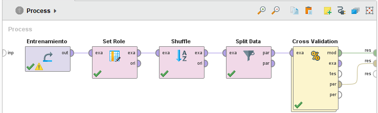
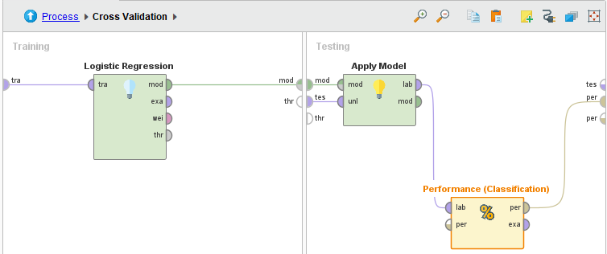
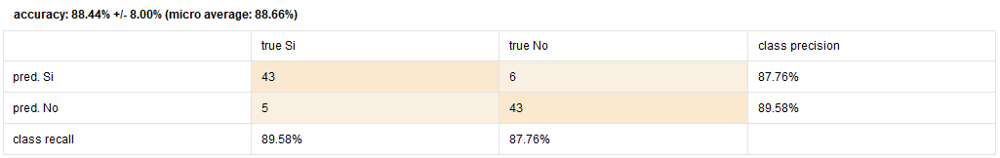

Aplicación del Modelo de Regresión Logística para predecir un segundo posible ataque al corazón en pacientes cardíacos
Descripción
Este proyecto consiste en generar un modelo de IA llamado Regresión Logística, cuyo objetivo es predecir si un paciente que haya tenido un ataque cardíaco, podría recibir un segundo. Este modelo se planea implementar para ser utilizado por cardiólogos, los cuales, con su ayuda, pueden decidir distintos tratamientos para sus pacientes, como medidas de prevención de un próximo ataque cardíaco.
Para esto tenemos dos datasets:
- Un dataset de entrenamiento, donde hay personas que ya tuvieron un ataque cardíaco e indica, entre otros atributos, si tuvieron o no, otro ataque.
- Un dataset de evaluación, donde hay personas que solo tuvieron un ataque cardíaco y se intenta predecir si tendrán otro, en base a sus atributos y al modelo construído a partir del dataset de entrenamiento.
Estos datasets tienen los siguientes atributos:
Marco teórico
La predicción de un segundo posible ataque cardíaco se realiza en base a un valor de un
p = P(Y = 1), donde Y es una variable aleatoria de
Bernoulli (p), definida Y = 1 en caso de la persona no
tenga un segundo ataque cardíaco, Y = 0, en caso de que la persona sí lo
tenga.
El valor p = P(Y = 1) se calcula en base a los datos observados x = (x1, ..., xp) por eso
p = p(x).
Para logar un valor de p(x) que esté entre 0 y 1 se plantea aplicar la
siguiente transformación
llamada Logit(p(x)) = Log(p(x) / (1 - p(x))) donde Logit(p(x)) toma valores entre menos infinito y más infinito
(conforme p(x) toma valores hacia 0 o 1, respectivamente). Con lo
cual, un modelo para la
transformación logit sobre p(x) podría ser
Logit(p(x))
= Log(p(x) / (1 - p(x))) = a * x + b o en
términos de
p(x) = exp(a * x + b) / (1 + exp(a * x + b)) = 1 / ( 1 + exp(-(a * x
+ b)) ).
RapidMiner
Para realizar este proyecto que implica crear un modelo de Regresión Logística, se utilizó RapidMiner, una aplicación para desarrollo de modelos de IA de uso industrial. El resultado es el siguiente:
Proceso de RapidMiner:

Modelo de regresión logística:

Parte del dataset de evaluación con las predicciones:


Dentro de las predicciones, se puede observar que 350 de los 690 pacientes del dataset de evaluación, tienen mayor probabilidad se tener un segundo ataque cardíaco. Veamos un ejemplo del dataset de evaluación:

Como se puede ver, el modelo categoriza a este paciente como no propenso a recibir un segundo ataque al corazón. Sin embargo, viendo el atributo confidence(Si), se puede notar que reconoce una probabilidad del 49.7% de que sí lo reciba. Con esta probabilidad, lo mejor sería asumir que está en una posición de riesgo de tener un segundo ataque al corazón y tomar medidas para evitarlo.
El modelo, en sí, calcula las probabilidades de que un paciente reciba un segundo ataque al corazón o no. Luego, si la probabilidad de que ocurra es mayor o igual que 0,5, se considera como un caso positivo. Sin embargo, hay que tener el cuenta los riesgos de asumir cualquiera de los dos casos posibles, y las probabilidades en cuestión, dependiendo del contexto de la predicción.
Para determinar la performance del modelo, conviene generar un nuevo par de datasets de entrenamiento y evaluación, a partir del dataset de entrenamiento original, de la siguiente forma:
 Matriz de Confusión:
Esta es la Matriz de Confusión, una herramienta que muestra información respecto al desempeño del modelo. Más concretamente, muestra la cantidad de veces que el modelo predijo que el paciente iba a tener un segundo ataque al corazón y acertó. Lo mismo con los casos negativos. Asimismo muestra los falsos positivos: en el caso de este modelo, son seis pacientes a los cuales se les predice que van a tener un segundo ataque, pero no lo tienen. Al igual que muestra los falsos negativos, que son cinco personas que tienen un segundo ataque cardíaco, pero el modelo no lo pudo predecir.
Dentro de los atributos que contribuyen a calcular la probabilidad de un segundo ataque al corazón, el atributo "Categoria_Peso", que representa el IMC del paciente, es el que más aporta a esta, con un P-valor de 0 y un coeficiente de -4,056, cuyo signo negativo se interpreta como que un aumento del valor del atributo implica que la función logit(p(x1, x2, ...)) tienda a disminuir, tendiendo a 0 la probabilidad de no tener un segundo ataque cardíaco (p(x1, x2, ...)), o lo que es lo mismo, tendiendo a 1 la probabilidad de sí tenerlo.